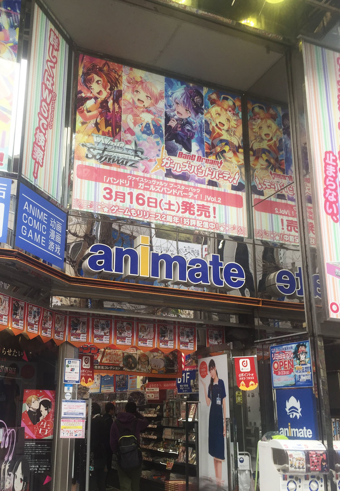

Tokyo stores
|
About Animate

Animate is an anime, manga, and game specialty store. We carry officially licensed products - including those that come with bonus items -
and hold special events. The first animate store was opened in 1983 in Ikebukuro, and the franchise now includes 123 stores across the world (as of June 2021).
Across our over thirty years of history, we have aimed to not only simply sell goods but also serve as a cultural hub and gateway to the cutting edge of the Japanese anime scene.
If you come to Japan, by all means, please stop by at an animate store and experience it for yourself!
Contact number: 03-5209-3330
|
|